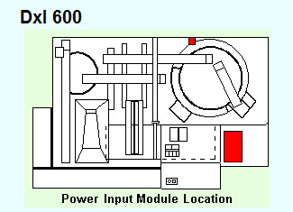
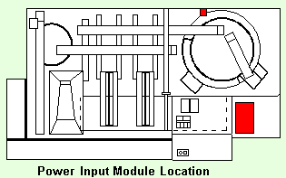
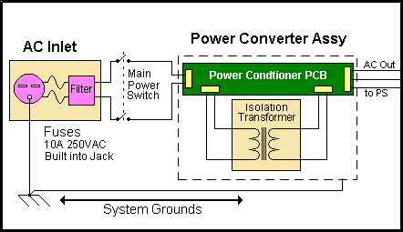
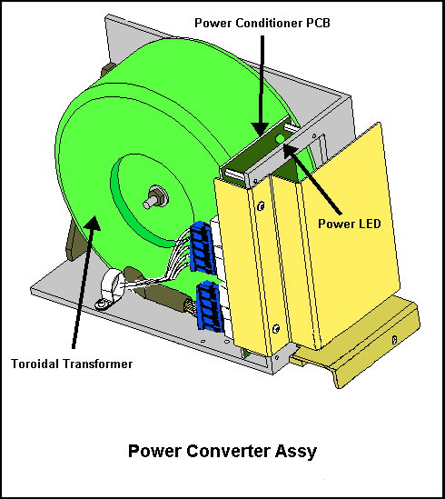

Power Input Module Operating Principles
Purpose
This document details the operating principles for the power input module.
Module Function
- Connection to the external AC power source.
- Fuse protection and filtering of the input voltage.
- Main power switch.
- Surge protection and transformer isolation.
Location
- AC inlet receptacle located near the bottom rear of the instrument.
- Power converter assembly (surge protector and isolation transformer) located behind the lower right front door, to the left of the power supply module.


Operational Overview

AC power enters the DxI through an AC line cord to the AC inlet receptacle. The AC inlet houses two fuses (10 A, 250 V AC) and filtering components. Spade lugs provide connections to a cable that leads to the main power switch (ON/OFF).
Progressing from the ON/OFF switch, another cable leads to connector JP1 on the Power Conditioner PCB. This PCB is housed in the power converter assembly that also houses the toroidal transformer. When power is switched on, a time-delay relay circuit on the PCB prevents in-rush current from creating a voltage spike in the transformer. A power on indicator (LED D1, located on the upper right corner of the PCB) indicates that AC power has reached the relay circuit.
The toroidal transformer is a large donut-shaped isolation transformer. The winding ratio is 1:1, thus 220 V AC input to the primary produces 220 V AC output from the secondary. The primary and secondary windings are connected to the back side of the Power Conditioner PCB at connectors JP4 and JP2.
The conditioned AC exits through connector JP3 of the Power Conditioner PCB and is delivered through a cable to J1 at the input of the power supply module.
Component Locations

Component Functions
| Component | Description and Function |
|---|---|
| CABLE, AC INLET TO CHASSIS GND | Ground wire that connects AC inlet to DxI chassis. |
| CONVERTER, POWER - ASSY (Internal power conditioner) | Isolates and conditions AC for delivery to power supply module. Includes toroidal transformer and Power Conditioner PCB. |
| FUSE, 3AB, 10 A, 250 V | Two fuses in parallel protect DxI from excessive current. Housed in AC. |
| HARNESS, AC INLET TO MAIN SWITCH | Cable from AC inlet to main power switch. |
| HARNESS, AC MOD TO MAIN SWITCH | Cable from main power switch to JP1 on Power Conditioner PCB. |
| HARNESS, AC MOD TO DC SUPPLIES | Cable from Power Conditioner PCB JP3 to J1 on input section of power supply module. |
| INLET, AC, WITH FILTER | AC input receptacle, houses two fuses (10 A, 250 V) and filtering components. |
| INPUT, AC, GROUND WIRE | Ground wire that connects power converter assembly to DxI chassis. |
| PCB, POWER CONDITIONER | Mounted in power converter assembly. PCB contains a power ON LED and a start-up time-delay relay. Provides connections to:
|
| SWITCH, MAIN POWER | DxI ON/OFF switch. |
| TRANSFORMER, TOROIDAL | Heavy donut-shaped isolation transformer, housed in power converter assembly, 1:1 winding ratio. |
Interacting Devices
- AC power cord.
- Power supply module.